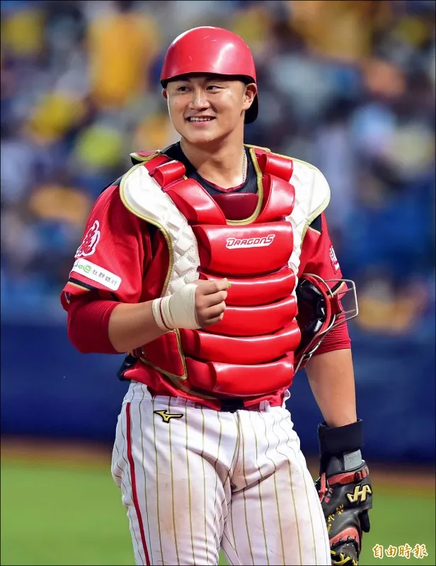
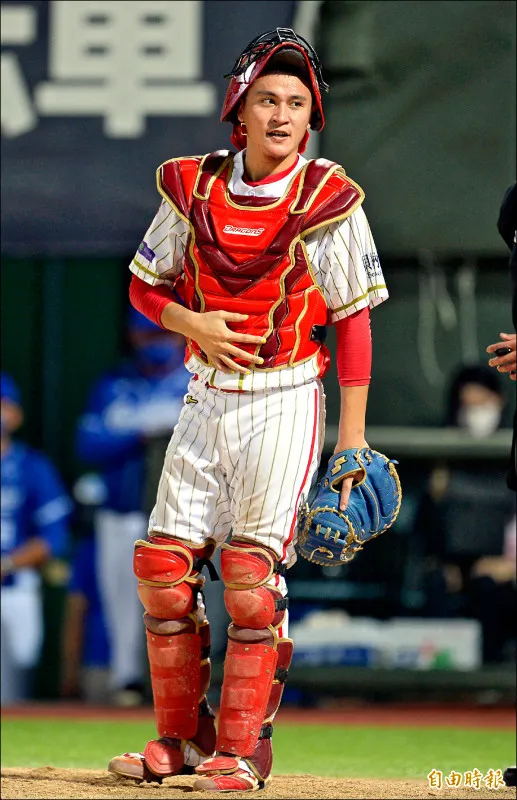
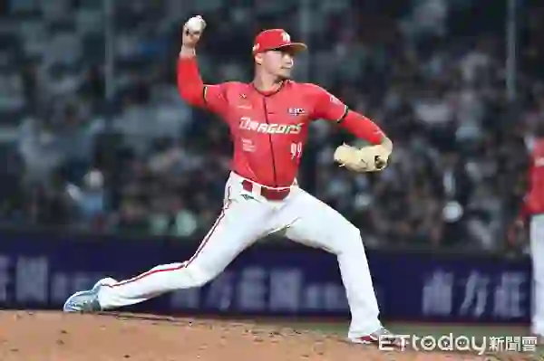
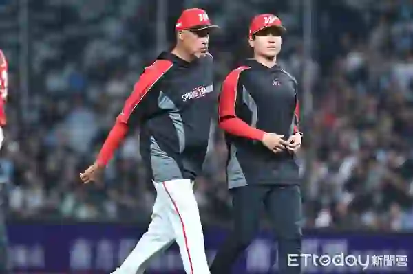

一直被總教練葉君璋重點培養的捕手林辰勳，今年似乎開始有突破性的進步。然而身為國家隊捕手的蔣少宏，雖然打擊率低迷，卻用56.4%的阻殺率佔住本壘板的位置。然而在守護神林凱威不斷救援失敗的情況下，味全龍捕手的位置，似乎有了新的解釋。
味全龍最大的收穫 主戰選手面臨良性競爭
過去中華職棒各隊的先發陣容，在開打前幾乎都可以預測得出來。畢竟球員的數量和質量都有限，然而今年在龍隊，卻成了教練團燒腦的課題。游擊手要啟用守備美技連連、競爭盜壘王的張政禹，還是新一代強打游擊劉峻緯？捕手要用超高阻殺率又有長打能力的蔣少宏，還是推打能力強、短程安打連連的林辰勳？甚至陳冠偉還是林凱威擔任終結者，都成為球迷間熱烈討論的話題。然而就在酸民你來我往的討論下，有了一個新的想法出現。
林辰勳崛起 蔣少宏用更高阻殺率回應
仔細檢視今年味全龍的捕手配置，蔣少宏依舊是龍隊無可動搖的主戰捕手。
在攻擊端保有捕手中相當不錯的長打能力；在防守端，更是聯盟公認的鐵壁。2026年球季截至目前為止，蔣少宏個人阻殺率超過五成，龍隊團隊阻殺率更高居聯盟第一。蔣少宏本人也指出，這不只是捕手功勞，更是投手群看管跑者能力提升的成果。

而在打擊方面，蔣少宏近年逐漸發展出的長打能力同樣重要。2025年單季5支全壘打創下生涯新高，讓他成為少數兼具防守與長打威脅的本土捕手。換句話說，蔣少宏從來沒有失去主戰地位。但關於終結者頻頻失手的問題，龍隊找到了一個功能性的答案－林辰勳。
同樣的林凱威 不同的壓制能力
林凱威的球速、球威、轉速，讓納瓦洛始終堅持他就是味全唯一終結者人選。然而在頻頻失手的同時，卻意外發現搭配不同捕手的數據，發現一個耐人尋味的現象。
有別於與蔣少宏搭配的77個打席被打擊率.303、防禦率5.06的悲慘數據，在與林辰勳搭配時的29個打席，居然是被打擊率.071、防禦率0.00的終結者成績。

這組數據未必代表誰配球比較優秀，畢竟77打席與29打席的樣本規模仍有差異。但至少說明一件事情：林辰勳與林凱威之間，似乎存在某種特殊的投捕化學反應。
而這個現象，剛好讓納瓦洛的堅持有了更好的結果。
納瓦洛的堅持 其實是一個更大的計畫
今年許多龍迷不理解的是：明明林凱威的成績起伏不定，為什麼納瓦洛始終不願意更換終結者？當然，從球探角度來看，林凱威其實一直擁有成為終結者的條件。

一個球速快、有一定控制力的高轉速直球、高品質滑球，還有優秀的製造揮空能力的投手，林凱威的問題從來不是球威不足，而是為什麼無法把球威穩定轉化成第27個出局數。
但納瓦洛始終相信，林凱威的球速、球威比陳冠偉更適合終結者，是味全龍的唯一選擇。「現在最重要的是他的心理強度。我們需要幫助他維持穩定、學會保持冷靜。」納瓦洛表示，只要林凱威能把心理層面調整到位，「我就能把他帶到我想讓他到的位置。」

味全龍站上頂端 是團隊養成的成果
隨著與林辰勳的搭配，龍迷開始對林凱威有了信心。在奪冠最後關頭，這位二軍長期養成的選手，靠著一次次出賽機會、一次次配球經驗，慢慢爭取到如今的位置。甚至休賽季持續在海外冬季聯盟等培養計畫中累積經驗，在關鍵時刻成為一軍可以信任的選項。
上半季守住龍隊最後一道防線的，是納瓦洛沒有放棄林凱威、林凱威也沒有被壓力擊倒、林辰勳靠自己的努力從二軍走到一軍、加上蔣少宏依舊維持聯盟頂級主戰捕手的價值。
最後形成的，不是一場捕手之爭。而是一支冠軍球隊最理想的樣子：
主戰捕手蔣少宏仍然負責大局，林辰勳也能在特定投捕組合中發揮最大價值；納瓦洛的堅持與二軍養成體系，最終共同成就了林凱威這位終結者，以及完整了味全的投手陣容。
拿下上半季冠軍只是先拿到總冠軍賽的門票，下半季林辰勳是否能持續加強阻殺能力和長打能力，或是蔣少宏提升打擊率、上壘率，期待味全打線中最薄弱的捕手火力升級，也許在台灣大賽就是勝負的關鍵...加油!